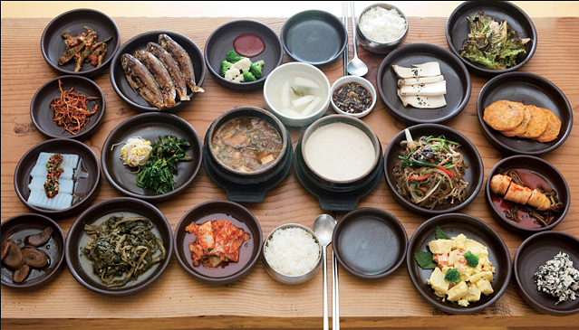
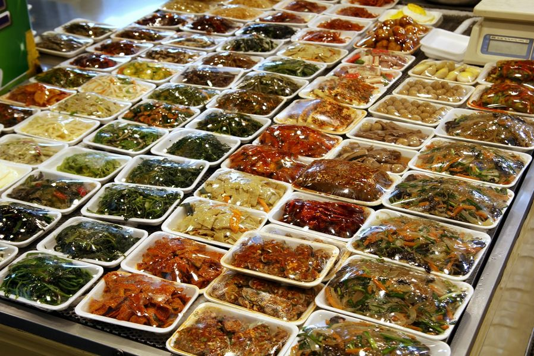
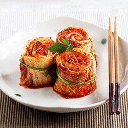

Saveurs Coréennes
Avec ses quatre saisons bien marquées, la Corée dispose d’ingrédients divers et variés.
Apparue il y a plus de 5 000ans, la cuisine coréenne est le fruit d’une longue histoire.
Elle reflète le charme et la joie de vivre des Coréens ; chaque mets possède son histoire, son caractère propre.
Les ‘jang’ qui jouent un rôle important dans cette tradition culinaire sont des épices obtenues par une longue fermentation. Ils sont réputés pour leur effets bénéfique pour la santé.
En mars 2006, le magazine américain ‘Health’ a reconnu le ‘kimchi’, le plus représentatif des aliments fermentés de Corée, comme l’un des cinq aliments les plus sains du monde.
Voir les recettes --->
Servir différents plats en même temps
BAPSANG CHARIM : une alimentation variée et équilibrée.
A la différence des usages occidentaux, tous les plats sont servis en même temps lors d’un repas coréen. Une table ainsi préparée avec le ‘bap’(riz cuit à la vapeur), et plusieurs ‘banchan’, mets d’accompagnement, est appelée 'BAPSANG CHARIM'.
Le bapsang charim se décline en de nombreuses variantes, et dans tous les cas, un repas coréen est incomplet sans un bol de riz et plusieurs banchan, ce qui fait une cuisine harmonieuse et équilibrée.
Réaliser différentes recettes avec les mêmes ingrédients
La cuisine coréenne possède des facettes diverses : on peut en créer plusieurs plats à partir d’ingrédients identiques. Ainsi, il existe un bon nombre de ‘bap’(riz blanc cuit au vapeur), suivant les ingrédients utilisés : ‘huin bap’(riz nature), ‘japgok bap’(riz aux différents céréales), etc… .
Les Coréens peuvent ainsi réaliser plus de 3 500 recettes à partir d’aliments de base, tels que le riz et les nouilles.
Quant au ‘banchan’ (mets d’accompagnement), on en recense quelque 1 500.
Assaisonner et équilibrer avec des ingrédients fermentés
Jang et kimchi : sauces et légumes fermentés La cuisine coréenne est surtout connue pour ses ingrédients fermentés : des assaisonnements comme la sauce soja, la pâte de soja fermentée ou la pâte de piment, mais aussi des saumures et le ‘kimchi’.
Ce goût que les coréens qualifient de « profond » vient justement des ‘jang’, sauces fermentées avec le temps.
Quant au ‘kimchi’, il existe plus de 350 variantes de ce fameux condiment à base de chou coréen selon les ingrédients utilisés et les saveurs obtenues. Mais le plus impressionnant, c’est que même le goût et l’apparence des ‘kimchi’ faits avec des ingrédients identiques varient selon les saisons.
Excellente source de lactobacilles et de fibres, cet aliment gagne une notoriété grandissante en dehors de la Corée.